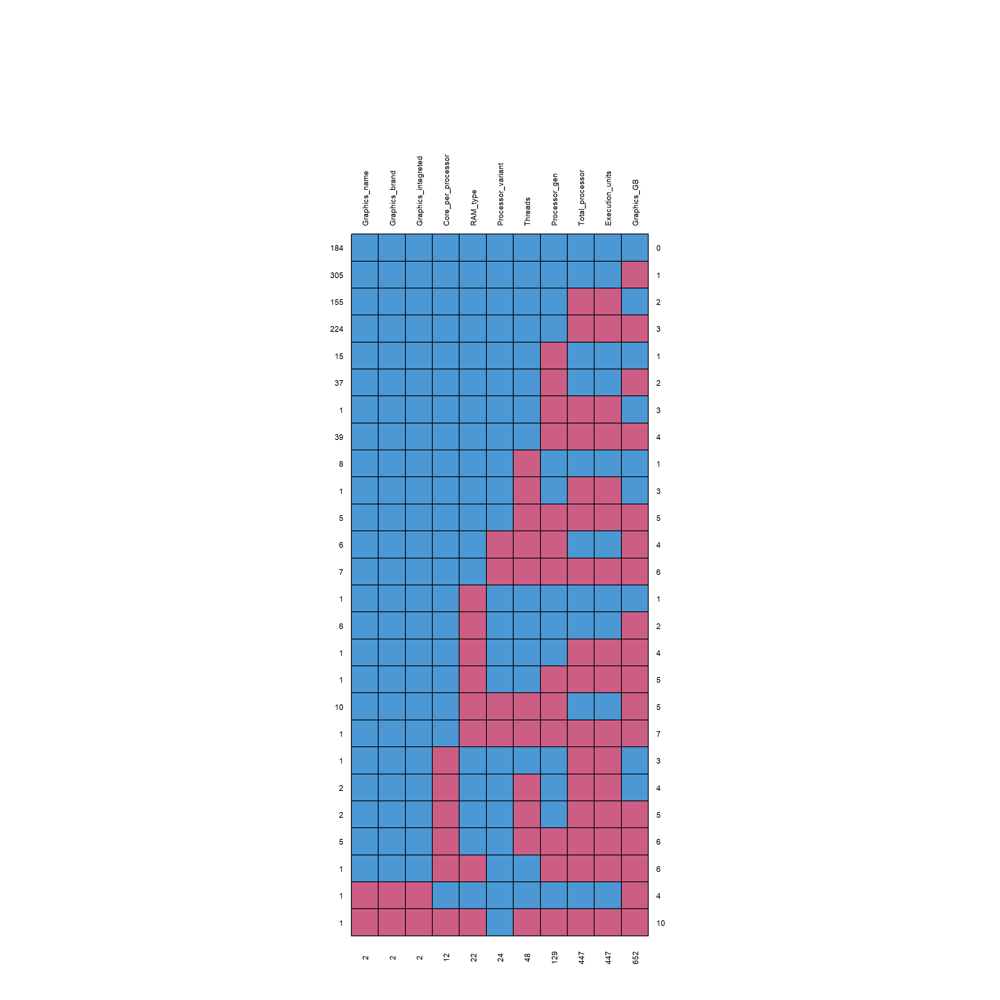
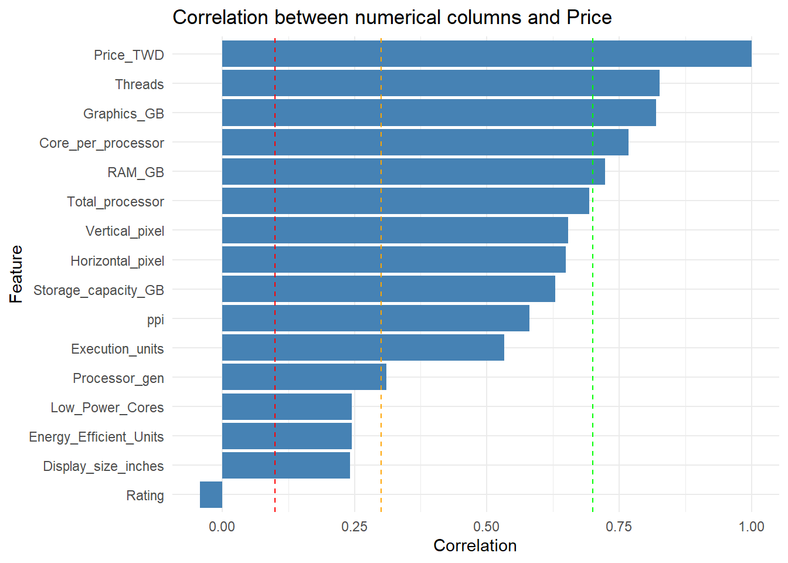
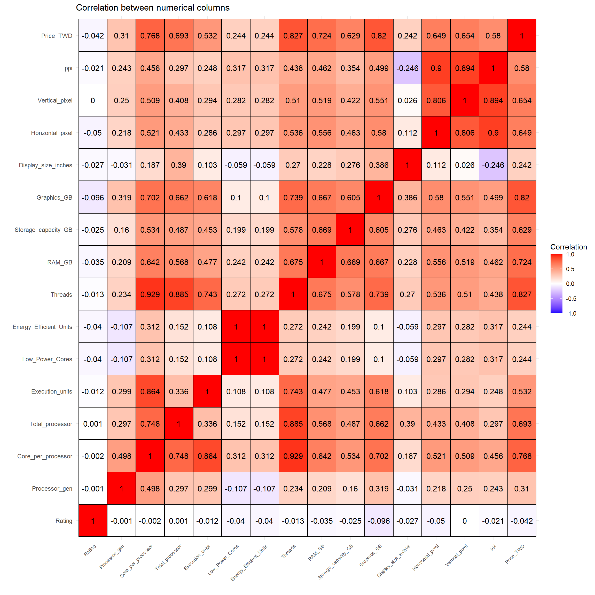
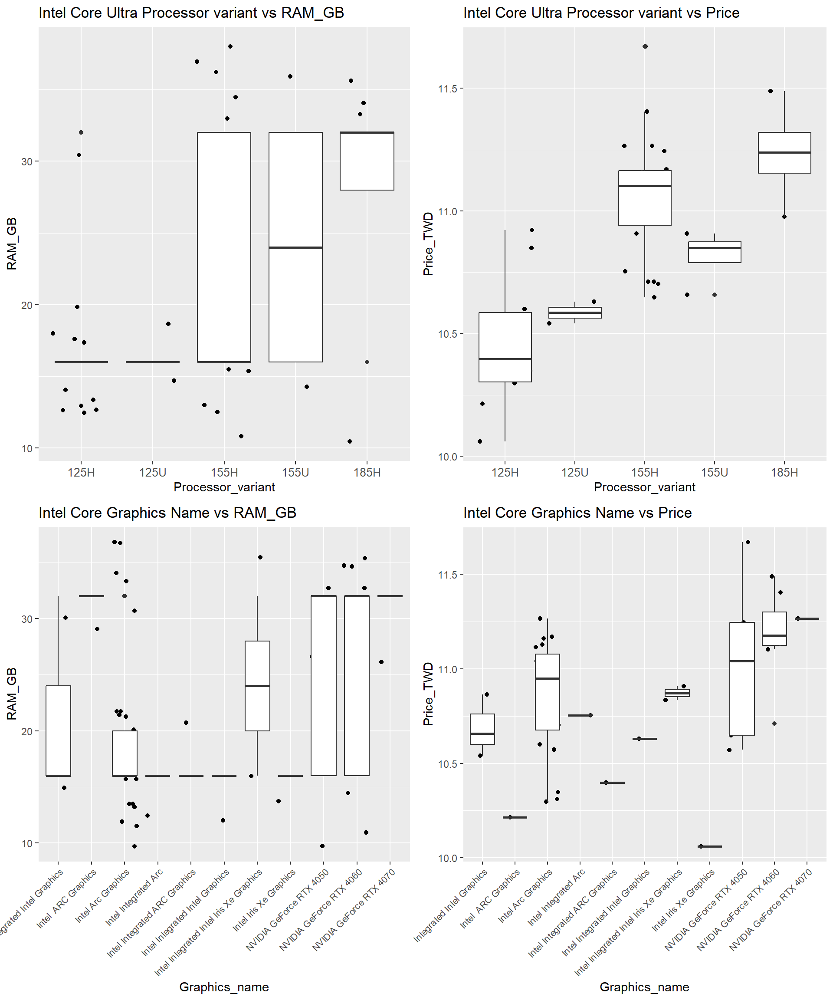
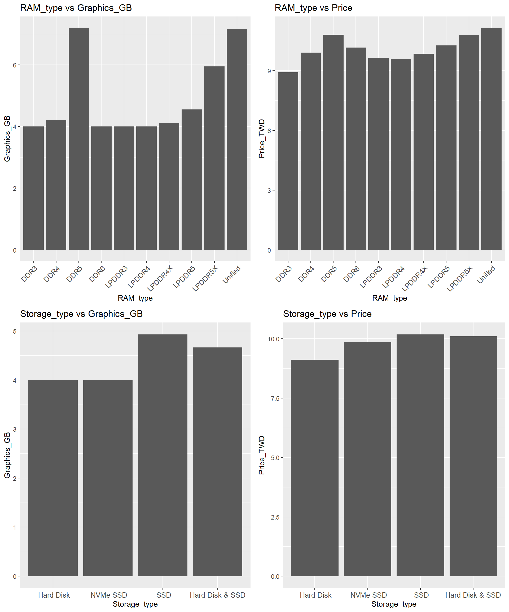
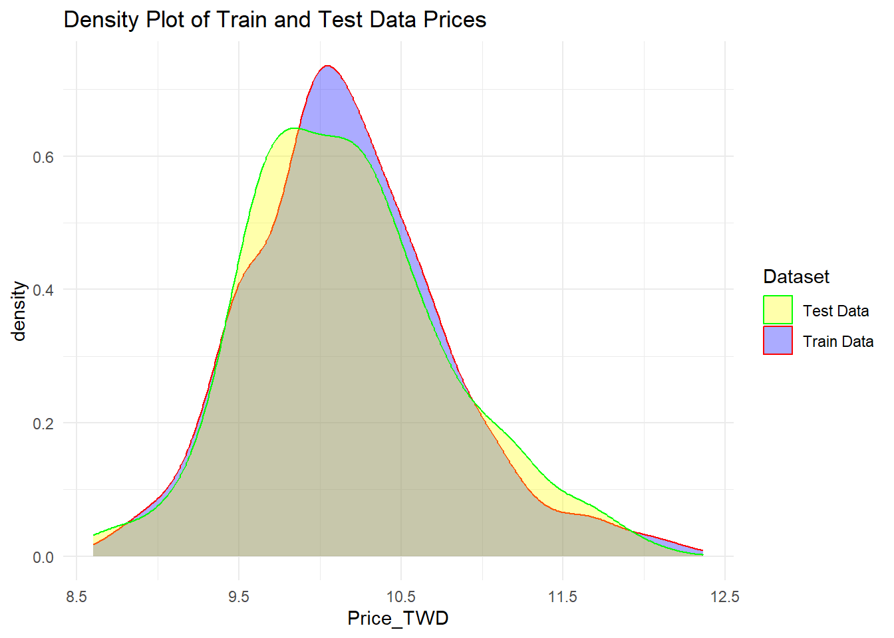
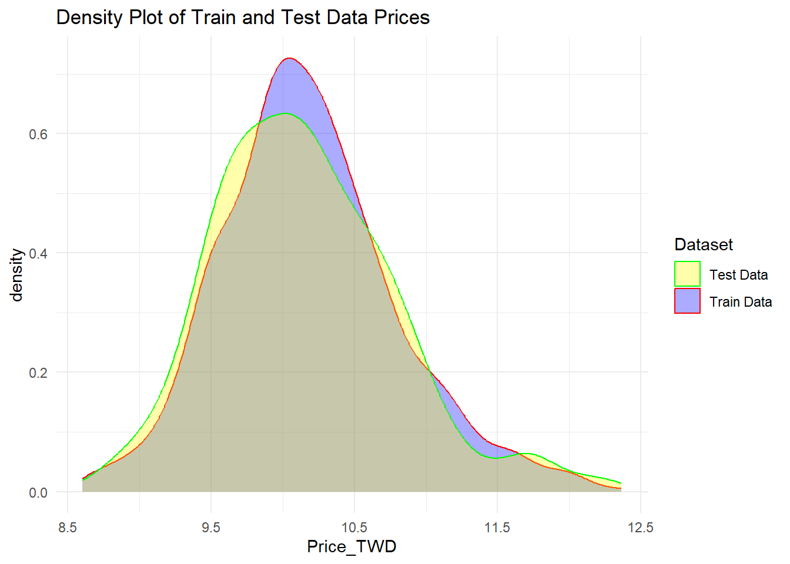
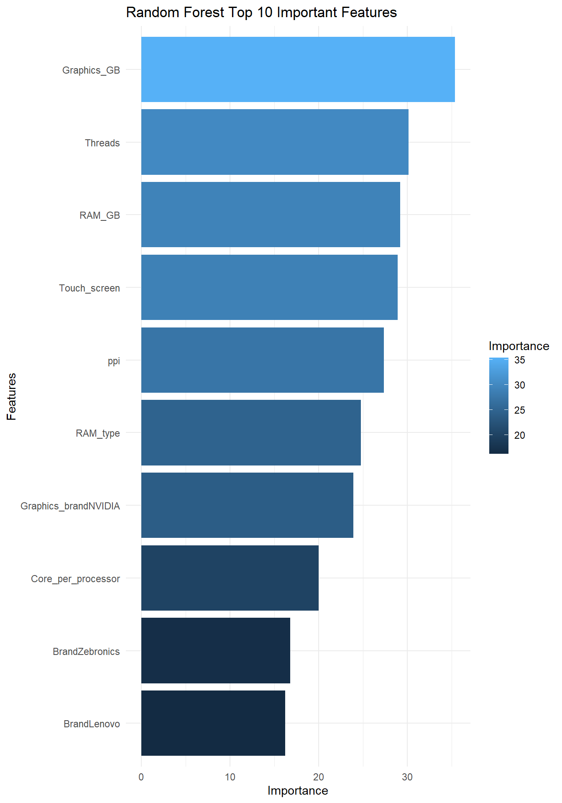
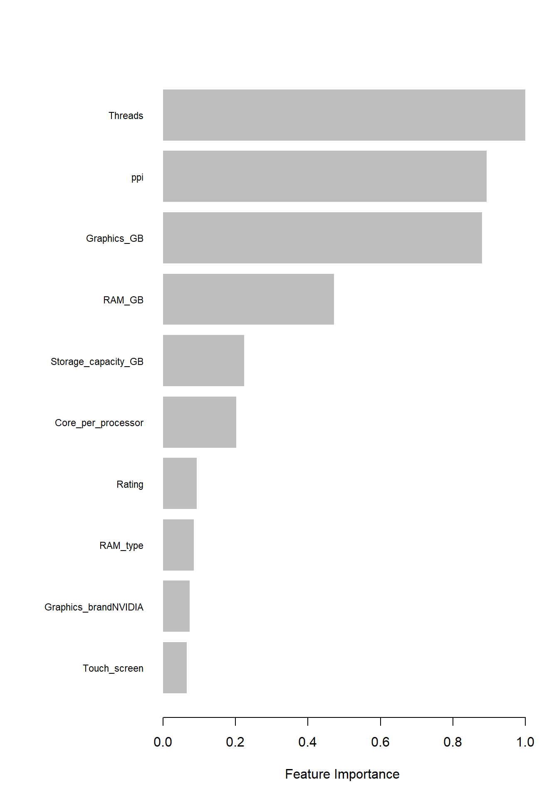

This dataset contains information about various laptops, including specifications and prices, curated for sales price prediction. With features ranging from processor details to display specifications, this dataset serves as a valuable resource for analyzing trends and predicting laptop prices.
Name: Name of the laptop model.
Brand: Brand of the laptop.
Price: Price of the laptop.
Rating: Rating of the laptop.
Processor_brand: Brand of the laptop’s processor.
Processor_name: Name of the laptop’s processor.
Processor_variant: Variant of the laptop’s processor.
Processor_gen: Generation of the laptop’s processor.
Core_per_processor: Number of cores per processor.
Total_processor: Total number of processors.
Execution_units: Number of execution units.
Low_Power_Cores: Number of low-power cores.
Energy_Efficient_Units: Indicates if the laptop has energy-efficient units.
Threads: Number of threads.
RAM_GB: RAM capacity of the laptop in gigabytes.
RAM_type: Type of RAM.
Storage_capacity_GB: Storage capacity of the laptop in gigabytes.
Storage_type: Type of storage.
Graphics_name: Name of the laptop’s graphics.
Graphics_brand: Brand of the laptop’s graphics.
Graphics_GB: Graphics capacity in gigabytes.
Graphics_integrated: Indicates if the laptop has integrated graphics.
Display_size_inches: Size of the laptop’s display in inches.
Horizontal_pixel: Number of horizontal pixels.
Vertical_pixel: Number of vertical pixels.
ppi: Pixels per inch.
Touch_screen: Indicates if the laptop has a touch screen.
mis_col <-colnames(laptop)[profile_missing(laptop)$num_missing >0]md.pattern_mine <-function (x, plot =TRUE, rotate.names =FALSE) {if (!(is.matrix(x) ||is.data.frame(x))) {stop("Data should be a matrix or dataframe") }if (ncol(x) <2) {stop("Data should have at least two columns") } R <-is.na(x) nmis <-colSums(R) R <-matrix(R[, order(nmis)], dim(x)) pat <-apply(R, 1, function(x) paste(as.numeric(x), collapse ="")) sortR <-matrix(R[order(pat), ], dim(x))if (nrow(x) ==1) { mpat <-is.na(x) }else { mpat <- sortR[!duplicated(sortR), ] }if (all(!is.na(x))) {cat(" /\\ /\\\n{ `---' }\n{ O O }\n==> V <==")cat(" No need for mice. This data set is completely observed.\n")cat(" \\\\|/ /\n `-----'\n\n") mpat <-t(as.matrix(mpat, byrow =TRUE))rownames(mpat) <-table(pat) }else {if (is.null(dim(mpat))) { mpat <-t(as.matrix(mpat)) }rownames(mpat) <-table(pat) } r <-cbind(abs(mpat -1), rowSums(mpat)) r <-rbind(r, c(nmis[order(nmis)], sum(nmis)))if (plot) { op <-par(mar =rep(0, 4))on.exit(par(op))plot.new()if (is.null(dim(sortR[!duplicated(sortR), ]))) { R <-t(as.matrix(r[1:nrow(r) -1, 1:ncol(r) -1])) }else {if (is.null(dim(R))) { R <-t(as.matrix(R)) } R <- r[1:nrow(r) -1, 1:ncol(r) -1] }if (rotate.names) { adj <-c(0, 0.5) srt <-90 length_of_longest_colname <-max(nchar(colnames(r)))/2.6plot.window(xlim =c(-1, ncol(R) +1), ylim =c(-1, nrow(R) + length_of_longest_colname), asp =1) }else { adj <-c(0.5, 0) srt <-0plot.window(xlim =c(-1, ncol(R) +1), ylim =c(-1, nrow(R) +1), asp =1) } M <-cbind(c(row(R)), c(col(R))) -1 shade <-ifelse(R[nrow(R):1, ], mdc(1), mdc(2))rect(M[, 2], M[, 1], M[, 2] +1, M[, 1] +1, col = shade)for (i in1:ncol(R)) {text(i -0.5, nrow(R) +0.3, colnames(r)[i], adj = adj, srt = srt, cex =0.6)text(i -0.5, -0.8, nmis[order(nmis)][i], cex =0.6, srt = srt) }for (i in1:nrow(R)) {text(ncol(R) +0.3, i -0.5, r[(nrow(r) -1):1, ncol(r)][i], adj =0, cex =0.6)text(-0.3, i -0.5, rownames(r)[(nrow(r) -1):1][i], adj =1, cex =0.6) }# text(ncol(R) + 1.3, -0.6, r[nrow(r), ncol(r)], cex = 0.6)# return(r) }}laptop[,mis_col] %>%md.pattern_mine(rotate.names = T)

Exploratory Data Analysis (EDA)
We remove the ‘X’ column, as it solely contains the index, which we already have. Additionally, we also reconstruct the ‘Price’ column to ‘Price_TWD’, since the original values are in INR (Indian Rupees). The conversion to TWD (Taiwanese Dollars) should be done using the exchange rate of 0.39, as per the Google rate on 23/05/2024.
Seeing from above result, we decided to use the log(Price) as our target y, as it fit the normal distribution better than the Price itself
Code
laptop$Price_TWD =log(laptop$Price_TWD)
To ensure data accuracy and consistency, we need to address and correct any typographical errors within the dataset. This step is crucial for maintaining the integrity of our analysis and ensuring that our insights are reliable.
To enhance our understanding of the dataset and to perform a more effective exploratory data analysis (EDA), we will initially separate the dataset into numerical and categorical columns based on their data types. This classification will enable us to tailor our analysis techniques appropriately to each type of data.
To understand the relationships between ‘Price’ and other numerical columns in the dataset, we will calculate the correlation coefficients. This analysis will help us identify how ‘Price’ interacts with other numerical variables, which can provide valuable insights into patterns and trends within the data.
Code
# Calculate correlation with Price_GBPcorrelation <-sapply(numerical_columns, function(x) cor(x, laptop$Price_TWD, use ="complete.obs"))# Sort the correlation values in descending ordersorted_correlation <-sort(correlation, decreasing =TRUE)# Display the sorted correlation values excluding the first element (if needed)sorted_correlation[-1]
# Convert to data frame for ggplot2correlation_df <-data.frame(Feature =names(correlation),Correlation = correlation)# Plotting with ggplot2ggplot(correlation_df, aes(x = Correlation, y =reorder(Feature, Correlation))) +geom_bar(stat ="identity", fill ="steelblue") +geom_vline(xintercept =c(0.1, 0.3, 0.7), color =c("red", "orange", "green"), linetype ="dashed") +theme_minimal() +labs(title ="Correlation between numerical columns and Price", x ="Correlation", y ="Feature")

Check the correlation across all numerical columns
Code
library(reshape2)library(ggplot2)# Compute the correlation matrixcorrelation_matrix <-round(cor(numerical_columns, use ="pairwise.complete.obs"), 3)# Melt the correlation matrix for ggplot2melted_corr_matrix <-melt(correlation_matrix)# Plotting with ggplot2ggplot(data = melted_corr_matrix, aes(x = Var1, y = Var2, fill = value)) +geom_tile(color ="black", linewidth =0.5) +scale_fill_gradient2(low ="blue", high ="red", mid ="white", midpoint =0, limit =c(-1, 1), space ="Lab", name="Correlation") +geom_text(aes(label = value), color ="black", size =4) +theme_minimal() +theme(axis.text.x =element_text(angle =45, vjust =1, size =7, hjust =1)) +labs(title ="Correlation between numerical columns", x ="", y ="")

The observation that ‘Energy_efficient_Units’ and ‘Low_Power_cores’ have a correlation of 1 suggests that they may contain identical data. To confirm this, we will compare their unique values and examine their correlation further. If they are indeed the same, we will retain ‘Energy_efficient_Units’ and drop ‘Low_Power_cores’.
Additionally, since ‘Horizontal_pixel’ and ‘Vertical_pixel’ are strongly correlated and can be inferred from ‘ppi’ (pixels per inch), we will simplify the dataset by dropping ‘Horizontal_pixel’ and ‘Vertical_pixel’.
This approach will reduce redundancy and help streamline our analysis.
Steps to implement:
Compare ‘Energy_efficient_Units’ and ‘Low_Power_cores’:
Check unique values.
Confirm correlation.
Drop redundant columns:
Remove ‘Low_Power_cores’.
Remove ‘Horizontal_pixel’.
Remove ‘Vertical_pixel’.
Code
# Drop Low_Power_Cores column as it has the same information as Energy_Efficient_Unitslaptop =subset(laptop, select =-c(Low_Power_Cores, Horizontal_pixel, Vertical_pixel))# Remove Low_Power_Cores from numerical_columnsnumerical_columns =subset(numerical_columns, select =-c(Low_Power_Cores))
# Loop through categorical columns and print unique value counts# Initialize an empty list to store the resultsresults <-list()# Iterate through each categorical columnfor (col in cat_cols) {# Calculate the number of unique values unique_values_count <-length(unique(laptop[[col]]))# Store the result in the list results[[col]] <- unique_values_count}# Convert the list to a dataframeresults_df <-data.frame(Column =names(results), UniqueValuesCount =unlist(results))# Print the dataframeresults_df %>%gt()
Column
UniqueValuesCount
Name
1020
Brand
30
Processor_brand
7
Processor_name
23
Processor_variant
126
RAM_type
11
Storage_type
4
Graphics_name
137
Graphics_brand
8
Graphics_integreted
3
Touch_screen
2
Operating_system
9
Given the high cardinality of the features “Processor_name,” “Processor_variant,” and “Graphics_name,” it is imperative to evaluate their contribution to the “Price.” We will also ascertain if their influence is distinct from that of “Graphics_GB.” For instance, consider using the Intel brand and Intel Core Ultra processor as examples for this assessment.
Code
# Processor_name vs. Graphics_GBintel_df <- laptop %>%filter(Processor_brand =="Intel")intel_df %>%ggplot(aes(x = Processor_name, y = Graphics_GB, fill = Processor_name))+geom_violin()+geom_jitter(color="black", size=0.4, alpha=0.9)+theme(axis.text.x =element_text(angle =45, hjust =1, size =10)) +ggtitle("Graphics_GB vs. Processor_name")+labs(x ="Processor_name")+theme(text =element_text(size =10))
From the plot, it is evident that these processor names also have the highest values for Graphics_GB, RAM_GB, and Threads. This indicates that these features, rather than the processor names themselves, are the primary drivers of the price.
Code
# Intel Core Ultra Processor variant vs RAM_GBdf_intel_core_ultra <- laptop %>%filter(Processor_name =="Intel Core Ultra")# Plot 1: Intel Core Ultra Processor variant vs RAM_GBp1 <-ggplot(df_intel_core_ultra, aes(x = Processor_variant, y = RAM_GB)) +geom_jitter() +geom_boxplot()+theme(axis.text.x =element_text(angle =0, hjust =0.5, size =10)) +ggtitle("Intel Core Ultra Processor variant vs RAM_GB")# Plot 2: Intel Core Ultra Processor variant vs Pricep2 <-ggplot(df_intel_core_ultra, aes(x = Processor_variant, y = Price_TWD)) +geom_jitter() +geom_boxplot()+theme(axis.text.x =element_text(angle =0, hjust =0.5, size =10)) +ggtitle("Intel Core Ultra Processor variant vs Price")# Plot 3: Intel Core Graphics Name vs RAM_GBp3 <-ggplot(df_intel_core_ultra, aes(x = Graphics_name, y = RAM_GB)) +geom_jitter() +geom_boxplot() +theme(axis.text.x =element_text(angle =45, hjust =1, size =8)) +ggtitle("Intel Core Graphics Name vs RAM_GB")# Plot 4: Intel Core Graphics Name vs Pricep4 <-ggplot(df_intel_core_ultra, aes(x = Graphics_name, y = Price_TWD)) +geom_jitter() +geom_boxplot() +theme(axis.text.x =element_text(angle =45, hjust =1, size =8)) +ggtitle("Intel Core Graphics Name vs Price")# Arrange the plots in a 2x2 grid with overall width and heightgrid.arrange(p1, p2, p3, p4, ncol =2, nrow =2)

Since the plots for RAM_GB and Price_TWD are similar, we will remove the features “Processor_name,” “Processor_variant,” and “Graphics_name.” The variance in these features is adequately captured by RAM_GB.
Since ‘Name’ contains information that can be explained by other features, we will drop it.
Code
X <- laptop# Calculate correlation with Price_TWDcorrelation <-sapply(numerical_columns, function(x) cor(X[[x]], X$Price_TWD, use ="complete.obs"))# Sort the correlation values in descending ordersorted_correlation <-sort(correlation, decreasing =TRUE)# Drop NameX =subset(X, select =-c(Name, Processor_gen))
Missing data imputation
We will be using MICE and method = ‘pmm’ to impute our missing data. And after we imputed the data, there are some rows that contains “space” value, which we will convert it to NA, and then delete the corresponding rows.
Code
# MICE algorithmtemp_data <-mice(X, m=5, maxit=100, meth='pmm', seed=500, printFlag =FALSE)X_imputed <-complete(temp_data, 1)# Replace NA values in RAM_type based on Processor_brand being 'Apple'X_imputed <- X_imputed %>%mutate(RAM_type =ifelse(is.na(RAM_type) & Processor_brand =='Apple', 'Unified', RAM_type))# Drop rows with any NA valuesX_imputed[X_imputed ==""] =NAX_imputed <-na.omit(X_imputed)cat('Number of columns:', ncol(X_imputed), ', Number of rows:', nrow(X_imputed), '\n')
Let’s first delete some “Brand, Processor_brand, Graphics_brand” name that have frequency <= 5, as having these values may be hard for us to split into training and testing data.
Code
# Use dplyr to count the frequency of each unique value in Column1value_counts <- X_imputed %>%group_by(Brand) %>%summarise(count =n())%>%arrange(desc(count))# Print the resultvalue_counts %>%gt()
Brand
count
Lenovo
215
HP
213
Asus
158
Dell
115
MSI
97
Acer
69
Samsung
32
Apple
20
Infinix
20
Chuwi
8
LG
7
Microsoft
7
Zebronics
7
Avita
6
Gigabyte
6
Honor
6
Xiaomi
6
Ultimus
5
Fujitsu
3
Primebook
3
Wings
3
AXL
2
Colorful
1
Jio
1
Ninkear
1
Razer
1
Tecno
1
Walker
1
iBall
1
Code
# Use dplyr to count the frequency of each unique value in Column1value_counts <- X_imputed %>%group_by(Processor_brand) %>%summarise(count =n())%>%arrange(desc(count))# Print the resultvalue_counts %>%gt()
Processor_brand
count
Intel
739
AMD
249
Apple
18
MediaTek
7
Microsoft
1
Qualcomm
1
Code
# Use dplyr to count the frequency of each unique value in Column1value_counts <- X_imputed %>%group_by(Graphics_brand) %>%summarise(count =n())%>%arrange(desc(count))# Print the resultvalue_counts %>%gt()
Graphics_brand
count
Intel
485
NVIDIA
353
AMD
150
Apple
18
ARM
7
Adreno
1
Radeon
1
Code
# Use dplyr to count the frequency of each unique value in Column1value_counts <- X_imputed %>%group_by(Operating_system) %>%summarise(count =n())%>%arrange(desc(count))# Print the resultvalue_counts %>%gt()
Operating_system
count
Windows 11 OS
939
Mac OS
20
DOS OS
17
Windows 10 OS
17
Chrome OS
15
Prime OS
3
Ubuntu OS
3
jio
1
Code
# Use dplyr to filter out rows where the frequency of values in Column1 is less than 2X_filtered <- X_imputed %>%group_by(Brand) %>%filter(n() >=5) %>%ungroup() # To remove the groupingX_filtered <- X_filtered %>%group_by(Processor_brand) %>%filter(n() >=5) %>%ungroup() # To remove the groupingX_filtered <- X_filtered %>%group_by(Graphics_brand) %>%filter(n() >=5) %>%ungroup() # To remove the grouping# X_filtered <- X_filtered %>%# group_by(Operating_system) %>%# filter(n() >= 3) %>%# ungroup() # To remove the grouping# # Print the filtered data frame# print("Filtered data frame:")head(X_filtered) %>%gt()
Brand
Rating
Processor_brand
Core_per_processor
Total_processor
Execution_units
Energy_Efficient_Units
Threads
RAM_GB
RAM_type
Storage_capacity_GB
Storage_type
Graphics_brand
Graphics_GB
Graphics_integreted
Display_size_inches
ppi
Touch_screen
Operating_system
Price_TWD
HP
4.30
AMD
6
2
4
0
12
8
DDR4
512
SSD
AMD
4
False
15.6
141.21
True
Windows 11 OS
9.886118
Lenovo
4.45
AMD
4
1
4
0
8
8
LPDDR5
512
SSD
AMD
4
False
15.6
141.21
False
Windows 11 OS
9.250436
HP
4.65
Intel
6
2
4
0
8
8
DDR4
512
SSD
Intel
4
False
15.6
141.21
False
Windows 11 OS
9.577389
Samsung
4.75
Intel
12
4
8
0
16
16
LPDDR5
512
SSD
Intel
4
False
13.3
165.63
False
Windows 11 OS
10.214499
Samsung
4.35
Intel
10
2
8
0
12
8
LPDDR4
512
SSD
Intel
4
True
15.6
141.21
False
Windows 11 OS
9.727114
Xiaomi
4.25
Intel
24
8
16
0
32
16
DDR5
1000
SSD
NVIDIA
8
False
16.1
187.51
False
Windows 11 OS
10.600779
Based on the information in the Summary and the categorical columns shown above, we need to convert character data (‘chr’) into numerical format to prepare it for modeling. Let’s examine the types of data in these categorical columns, particularly focusing on ‘RAM_type’ and ‘Storage_type.’ The other columns, such as those involving binary data or brand names, can be effectively transformed using binary encoding and one-hot encoding, respectively.
Code
p1 <-ggplot(X_filtered, aes(x = RAM_type, y = Graphics_GB)) +stat_summary(fun = mean, geom ="bar") +theme(axis.text.x =element_text(angle =45, hjust =1, size =10)) +ggtitle("RAM_type vs Graphics_GB")p2 <-ggplot(X_filtered, aes(x = RAM_type, y = Price_TWD)) +stat_summary(fun = mean, geom ="bar") +theme(axis.text.x =element_text(angle =45, hjust =1, size =10)) +ggtitle("RAM_type vs Price")p3 <-ggplot(X_filtered, aes(x = Storage_type, y = Graphics_GB)) +stat_summary(fun = mean, geom ="bar") +theme(axis.text.x =element_text(angle =0, hjust =0.5, size =10)) +ggtitle("Storage_type vs Graphics_GB")p4 <-ggplot(X_filtered, aes(x = Storage_type, y = Price_TWD)) +stat_summary(fun = mean, geom ="bar") +theme(axis.text.x =element_text(angle =0, hjust =0.5, size =10)) +ggtitle("Storage_type vs Price")# Arrange the plots in a 2x2 grid with overall width and heightgrid.arrange(p1, p2, p3, p4, ncol =2, nrow =2)

From above plots, we can see that DDR5 has the highest average Price compares to other RAM_type and SSD has highest average price compares to other Storage_type. But, as it don’t really align with Price, we will categorize “RAM_type” and “Storage_type” as ordinal data, and rank them based on the time they are introduced.
RAM_type ranks (oldest to newest):
DDR3, 2007
LPDDR3, 2012
DDR4, 2014
LPDDR4, 2014
LPDDR4X, 2016
Unified, 2020
DDR5, 2020
LPDDR5, 2020
LPDDR5X. 2021
DDR6, 2024
Storage_type ranks (oldest to newest):
Hard Disk
SSD
Hard Disk + SSD
NVMe SSD.
Types of Encoding we will use:
Binary data: Binary Encoding for Graphics_integreted and Touch_screen
Nominal data: One-hot Encoding for Brand, Processor_brand, Graphics_brand and Operating_system
Ordinal data: Label Encoding for RAM_type and Storage_type
Code
# Convert to binary numeric values firstX_filtered$Graphics_integreted <-ifelse(X_filtered$Graphics_integreted =="True", 1, 0)X_filtered$Touch_screen <-ifelse(X_filtered$Touch_screen =="True", 1, 0)# Prepare factors for label encoding prior to one-hot encoding# RAM_type with a specific orderlevel_order_ram <-c("DDR3", "LPDDR3", "DDR4", "LPDDR4", "LPDDR4X", "Unified", "DDR5", "LPDDR5", "LPDDR5X", "DDR6")X_filtered$RAM_type <-factor(X_filtered$RAM_type, levels = level_order_ram)X_filtered$RAM_type <-as.integer(X_filtered$RAM_type)# Storage_type with a specific orderlevel_order_storage <-c(" Hard Disk", " SSD", "Hard Disk & SSD", " NVMe SSD")X_filtered$Storage_type <-factor(X_filtered$Storage_type, levels = level_order_storage)X_filtered$Storage_type <-as.integer(X_filtered$Storage_type)# One-hot Encoding for the rest of the categorical variables# Variables to encodevars_to_encode <-c("Brand", "Processor_brand", "Graphics_brand", "Operating_system")# Creating a model matrix for the selected variablesencoded_vars <-model.matrix(~0+ Processor_brand + Brand + Graphics_brand + Operating_system, data = X_filtered) # X_encoded <-cbind(X_filtered, encoded_vars)# If original categorical variables should be droppedX_encoded <- X_encoded[, !colnames(X_encoded) %in% vars_to_encode, drop =TRUE]# Output the structure of the encoded datacat('Number of columns:', ncol(X_encoded), ', Number of rows:', nrow(X_encoded), '\n')
Number of columns: 44 , Number of rows: 991
Data Preprocessing is Done!! Let’s check the Summary once again.
We will do several regression models to predict the prices of laptops, but first we have to split the dataset into training and testing data.
Code
# Set the seed for reproducibilityset.seed(567)# Randomly sample row indicessample_indices <-sample(seq_len(nrow(X_encoded)), size =0.8*nrow(X_encoded))# Split the data into training and testing setstrainData <- X_encoded[sample_indices, ]testData <- X_encoded[-sample_indices, ]# Print the dimensions of the training and testing setscat("Training set dimensions:", dim(trainData), "\n")
Training set dimensions: 792 44
Code
cat("Testing set dimensions:", dim(testData), "\n")
Testing set dimensions: 199 44
We can generate the density plot of Price_TWD for both the training and testing datasets multiple times to verify if their distributions are similar.
Code
# Plot densitylibrary(ggplot2)ggplot() +geom_density(data = trainData, aes(x = Price_TWD, color ="Train Data", fill ="Train Data"), alpha =0.328) +geom_density(data = testData, aes(x = Price_TWD, color ="Test Data", fill ="Test Data"), alpha =0.328) +scale_color_manual(name ="Dataset", values =c("Train Data"="red", "Test Data"="green")) +scale_fill_manual(name ="Dataset", values =c("Train Data"="blue", "Test Data"="yellow")) +theme_minimal() +ggtitle("Density Plot of Train and Test Data Prices") +theme(legend.position ="right")

Code
# Set the seed for reproducibilityset.seed(123)# Randomly sample row indicessample_indices <-sample(seq_len(nrow(X_encoded)), size =0.8*nrow(X_encoded))# Split the data into training and testing setstrainData <- X_encoded[sample_indices, ]testData <- X_encoded[-sample_indices, ]write.csv(trainData, "trainData.csv", row.names=FALSE)write.csv(testData, "testData.csv", row.names=FALSE)# Print the dimensions of the training and testing setscat("Training set dimensions:", dim(trainData), "\n")
Training set dimensions: 792 44
Code
cat("Testing set dimensions:", dim(testData), "\n")
Testing set dimensions: 199 44
Code
# Plot densitylibrary(ggplot2)ggplot() +geom_density(data = trainData, aes(x = Price_TWD, color ="Train Data", fill ="Train Data"), alpha =0.328) +geom_density(data = testData, aes(x = Price_TWD, color ="Test Data", fill ="Test Data"), alpha =0.328) +scale_color_manual(name ="Dataset", values =c("Train Data"="red", "Test Data"="green")) +scale_fill_manual(name ="Dataset", values =c("Train Data"="blue", "Test Data"="yellow")) +theme_minimal() +ggtitle("Density Plot of Train and Test Data Prices") +theme(legend.position ="right")

Linear Regression
Code
# Fit a linear modelmodel <-lm(Price_TWD ~ ., data = trainData)# Print the model summarysummary(model)
# Combine RMSE and mae values into vectorsrmse <-c(lr_rmse, svr_rmse, rf_rmse, xgb_rmse, lgbm_rmse)mae <-c(lr_mae, svr_mae, rf_mae, xgb_mae, lgbm_mae)# Create a matrix and set column namesperformance <-rbind(rmse, mae)colnames(performance) <-c("LR", "SVR", "RF", "XGB", "LightGBM")# Convert the matrix to a data frame for easier manipulationperformance_df <-as.data.frame(performance)# Format the values to two decimal placesperformance_df[] <-lapply(performance_df, function(x) format(as.numeric(x), nsmall =2, digits =2, scientific =FALSE))performance_df
LR SVR RF XGB LightGBM
rmse 10517.08 11712.62 10116.33 7867.96 10207.96
mae 5052.07 5206.16 4755.53 4141.30 4911.50
Feature Importance
Plot feature importance from model we are using.
Random Forest Feature Importance
Code
# Extract and prepare importance scoresimportance_scores <-importance(rf_model)importance_df <-data.frame(Importance = importance_scores[, "%IncMSE"], Feature =rownames(importance_scores))# Sort and select the top 10 featuresimportance_df <- importance_df[order(-importance_df$Importance), ]top_10_features <-head(importance_df, 10)# Plot using ggplot2library(ggplot2)ggplot(top_10_features, aes(x =reorder(Feature, Importance), y = Importance, fill = Importance)) +geom_col() +coord_flip() +labs(title ="Random Forest Top 10 Important Features", x ="Features", y ="Importance") +theme_minimal()

XGBoost Feature Importance
Code
# Extract feature importance based on gainimportance_matrix <-xgb.importance(feature_names =colnames(features_train), model = xgb_model)# Sorting the importance matrix by gain in descending ordertop_features <- importance_matrix[order(-importance_matrix$Gain),]# Selecting the top 10 featurestop_10_features <-head(top_features, 10)# Print the top 10 features# print(top_10_features)# Plot the top 10 feature importancesxgb.plot.importance(importance_matrix = top_10_features, rel_to_first =TRUE, xlab ="Feature Importance")

LightGBM Feature Importance
Code
feature_importance <-lgb.importance(model = lightgbm_model)sorted_feature_importance <- feature_importance[order(-feature_importance$Gain), ]# Plot feature importance using ggplot2ggplot(sorted_feature_importance, aes(x =reorder(Feature, Gain), y = Gain, fill = Gain)) +geom_col(show.legend =FALSE) +coord_flip() +# Flips the axes for better readabilitylabs(title ="Feature Importance from LightGBM Model", x ="Features", y ="Importance (Gain)") +theme_minimal()
import shapimport matplotlib.pyplot as plt# Generate SHAP values using the TreeExplainerexplainer = shap.TreeExplainer(catboost_best_model)shap_values = explainer(r.features_train)# Create the beeswarm plotfig = shap.plots.beeswarm(shap_values, show =False)# Adjust layout to avoid text cut-off and make y-axis labels closerplt.gca().margins(y=0.01) # Adjust margins to make y-axis labels closerplt.tight_layout(pad=1.0) # Use tight_layout with a smaller pad# Show the plotplt.show()
with torch.no_grad(): val_loss =0.0for inputs, target in val_loader: outputs = mlp_model(inputs) loss = np.sqrt(criterion(outputs, target.unsqueeze(1))) val_loss += loss.item() *len(target) val_loss /=len(val_loader.dataset)print(f'Model evaluation - Testing Loss: {val_loss:.4f}')
Model evaluation - Testing Loss: 7827.6629
Conclusion
Code
# Combine RMSE and mae values into vectorsrmse <-as.numeric(c(lr_rmse, svr_rmse, rf_rmse, xgb_rmse, lgbm_rmse, py$catboost_rmse, py$val_loss))rmse <-round(rmse, digits =3)# Create a matrix and set column namesperformance <- rmsemodel <-c("LR", "SVR", "RF", "XGB", "LightGBM", "catboost", "nn")# Convert the matrix to a data frame for easier manipulationperformance_df <-as.data.frame(cbind(model, performance))performance_df %>%gt()